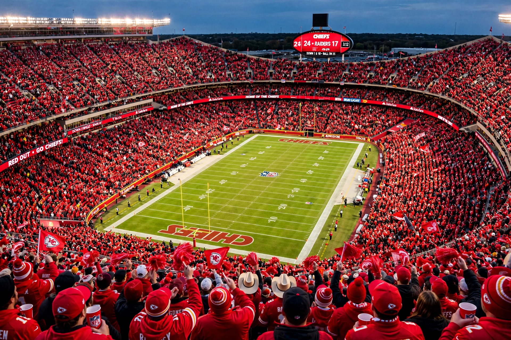

The Kansas City Chiefs are a professional American football team based in Kansas City, Missouri. They compete in the National Football League (NFL) as a member of the AFC West division and play at Arrowhead Stadium.

| Kansas City Chiefs | |
|---|---|
| Founded | 1960 (as Dallas Texans) |
| Stadium | Arrowhead Stadium |
| Owner | Hunt family |
| Head coach | Andy Reid |
| Super Bowl wins | IV, LIV, LVII, LVIII |
Founded by Lamar Hunt as the Dallas Texans of the AFL, the team moved to Kansas City in 1963 and won Super Bowl IV (1970). After decades without a title, under coach Andy Reid and quarterback Patrick Mahomes they won Super Bowls LIV (2020), LVII (2023) and LVIII (2024), establishing a modern dynasty.
Rivals include the Raiders, Broncos and Chargers. Fans are known as Chiefs Kingdom; Arrowhead is famed for crowd noise and tailgating.